练习: 定义梁
目标
成功完成此练习后，您将能够：
- 创建梁理想化。
假定背景
在这个练习中，您将使用 Creo Simulate 中的“梁理想化”来检查框架结构中的应力和变形。“梁”是元素的一种线性类型，使您能够在不牺牲模拟求解质量的情况下加快处理速度。
“关闭窗口”(Close Window) “拭除未显示的”(Erase Not Displayed)
“拭除未显示的”(Erase Not Displayed) 
 Simulate_Modeling\Beam
Simulate_Modeling\Beam
 FRAMEWORK_CANTILEVER_SIMULATE.PRT
FRAMEWORK_CANTILEVER_SIMULATE.PRT
|
|
||
 |
请 Creo Parametric 用户打开 FRAMEWORK_CANTILEVER.PRT | |
|
|
||
-
任务 1. 定义梁理想化。
1. 在功能区中，选择“精细模型”(Refine Model) 选项卡。
2. 在“理想化”(Idealizations) 组中单击“梁”(Beam)
 。“梁定义”(Beam Definition) 对话框随即出现。
。“梁定义”(Beam Definition) 对话框随即出现。
3. 按住 CTRL 键并在模型中选择所显示的这两段。
注意箭头的方向。这些箭头显示梁横截面方向的 X 轴正向。这些箭头必须指向同一个方向。
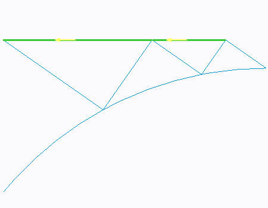
4. 在“梁定义”(Beam Definition) 对话框的“材料”(Material) 部分，单击“更多”(More)。将出现“材料”(Materials) 对话框。
5. 校验 ss.mtl 已添加至模型。单击“确定”(OK)。
6. 选择“开始”(Start) 选项卡。
7. 在“梁截面”(Beam Section) 部分，单击“更多”(More)。“梁截面”(Beam Sections) 对话框随即出现。
8. 单击“新建”(New)。“梁截面定义”(Beam Section Definition) 对话框随即出现。
9. 在“名称”(Name) 字段中键入 U-Channel
。
10. 选择“截面”(Section) 选项卡。
11. 从“类型”(Type) 下拉菜单中选择“导槽”(Channel)。
12. 完成如图所示的对话框其余部分。
13. 单击“确定”(OK) 返回“梁截面”(Beam Sections) 对话框。
14. 单击“确定”(OK) 返回“梁定义”(Beam Definition) 对话框。
15. 单击“确定”(OK)。
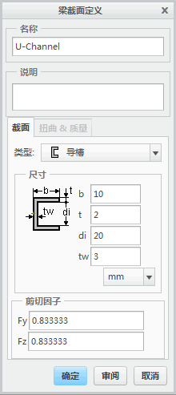16. 在功能区中，选择“精细模型”(Refine Model) 选项卡。
17. 在“理想化”(Idealizations) 组中单击“梁”(Beam)
。“梁定义”(Beam Definition) 对话框随即出现。
18. 按住 CTRL 键并在模型中选择所显示的这三段。
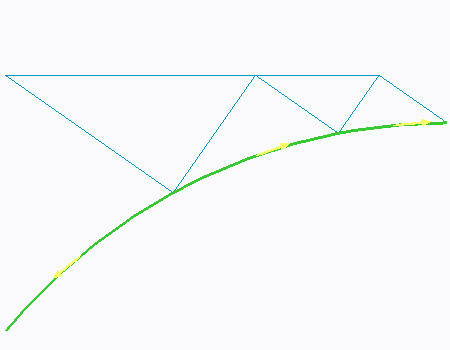19. 注意箭头的方向。这些箭头显示梁横截面方向的 X 轴正向。这些箭头必须指向同一个方向。直接从模型具有反向流向的段上选择箭头并注意方向改变。现在，所有箭头都应指向如图所示的同一个方向。
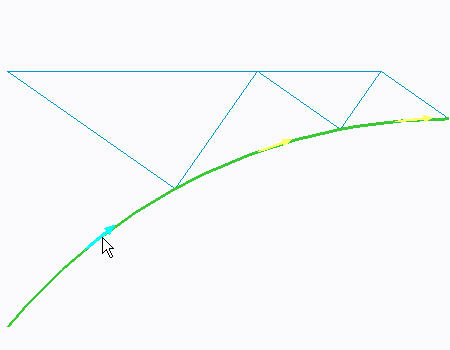20. 在“梁定义”(Beam Definition) 对话框的“材料”(Material) 部分，单击“更多”(More)。将出现“材料”(Materials) 对话框。
21. 校验 SS 已显示在“模型”(Model) 列的“材料”(Material) 中。单击“确定”(OK)。
22. 在“属性”(Properties) 部分，在 Y 字段中键入 0，在 Z 字段中键入 1。
23. 选择“开始”(Start) 选项卡。
24. 在“梁截面”(Beam Section) 部分，单击“更多”(More)。“梁截面”(Beam Sections) 对话框随即出现。
25. 校验 U-Channel 已被选定。
26. 单击“确定”(OK) 返回“梁定义”(Beam Definition) 对话框。
27. 单击“确定”(OK)。
28. 在功能区中，选择“精细模型”(Refine Model) 选项卡。
29. 在“理想化”(Idealizations) 组中单击“梁”(Beam)
。“梁定义”(Beam Definition) 对话框随即出现。
30. 按住 CTRL 键并在模型中选择所显示的这五段。
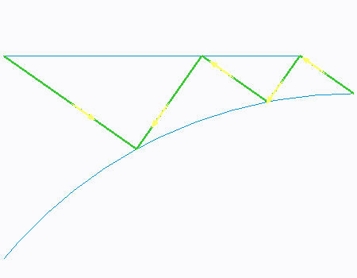31. 在“梁定义”(Beam Definition) 对话框的“材料”(Materials) 部分，单击“更多”(More)。将出现“材料”(Materials) 对话框。
32. 校验 SS 已显示在“模型”(Model) 列的“材料”(Material) 中。单击“确定”(OK)。
33. 选择“开始”(Start) 选项卡。
34. 在“梁截面”(Beam Section) 部分，单击“更多”(More)。“梁截面”(Beam Sections) 对话框随即出现。
35. 单击“新建”(New)。“梁截面定义”(Beam Section Definition) 对话框随即出现。
36. 在“名称”(Name) 字段中键入 Cross。
37. 选择“截面”(Section) 选项卡。
38. 从“类型”(Type) 下拉菜单中选择“草绘实体”(Sketched Solid)。
39. 单击“草绘”(Sketch)。阅读“信息”(Information) 对话框。
40. 单击“确定”(OK)。“草绘器”(Sketcher) 窗口随即打开。
您应该使用已有的草绘截面文件。可在 Creo Parametric 或 Creo Simulate 中草绘这个截面文件。
41. 在功能区中，选择“草绘”(Sketch) 选项卡。
42. 在“获取数据”(Get Data) 组中单击“文件系统”(File System) 。“打开”(Open) 对话框随即出现。
43. 选择 cross_section.sec，然后单击“打开”(Open)。
44. 单击活动窗口以放置草绘。草绘截面随即出现。
45. 单击草绘的中心。不要松开鼠标按钮。拖动草绘，直到它捕捉到如图所示的现有坐标系参考。
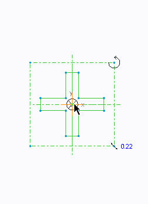46. 在“缩放因子”(Scaling Factor) 字段中键入 1.0。
47. 单击“接受”(Accept)
 。
。
48. 在功能区中，选择“草绘”(Sketch) 选项卡。
49. 在“草绘”(Sketching) 组中单击“点”(Point) 。
50. 在截面的每个角上放置点，如图所示。总共十二个点。
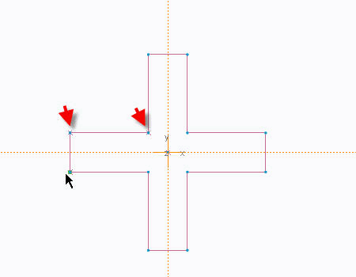51. 单击“接受”(Accept)
以保存截面并返回至 Creo Simulate 窗口。
52. 在“梁截面定义”(Beam Section Definition) 对话框中，单击“确定”(OK) 以返回至“梁截面”(Beam Sections) 对话框。
53. 单击“确定”(OK) 返回“梁定义”(Beam Definition) 对话框。
54. 在“梁释放”(Beam Release) 部分，单击“更多”(More)。“梁释放”(Beam Releases) 对话框随即出现。
55. 单击“新建”(New)。“梁释放”(Beam Release) 对话框随即出现。
56. 单击“旋转”(Rotation) 自由度：Rx、Ry 和 Rz。
57. 单击“确定”(OK) 返回“梁释放”(Beam Releases) 对话框。
58. 单击“确定”(OK) 返回“梁定义”(Beam Definition) 对话框。
59. 单击“确定”(OK)。
-
任务 2. 定义质量理想化。
1. 在功能区中，选择“精细模型”(Refine Model) 选项卡。
2. 在“理想化”(Idealizations) 组中单击“质量”(Mass) 。“质量定义”(Mass Definition) 对话框随即出现。
3. 在模型上，选择如图所示的弯曲段的顶点。
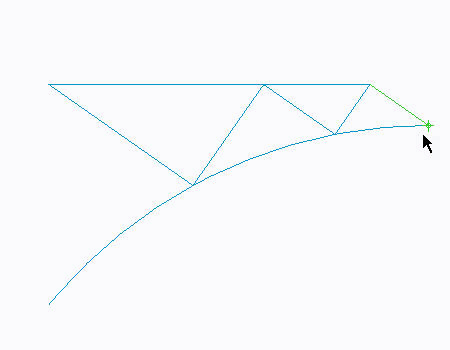4. 在“质量”(Mass) 字段中键入 100，并从下拉菜单中选择 kg。
5. 单击“确定”(OK)。
-
任务 3. 定义重力载荷。
1. 在功能区中，选择“主页”(Home) 选项卡。
2. 在“载荷”(Loads) 组中单击“重力载荷”(Gravity Load) 。“重力载荷”(Gravity Load) 对话框随即出现。
3. 在“加速度”(Acceleration) 部分的 Y 字段中键入 -9810。
4. 单击“确定”(OK)。
-
任务 4. 定义约束。
1. 在功能区中，选择“主页”(Home) 选项卡。
2. 在“约束”(Constraints) 组中单击“位移”(Displacement)
 。将出现“约束”(Constraint) 对话框。
。将出现“约束”(Constraint) 对话框。
3. 在“参考”(References) 部分，从下拉菜单中选择“点”(Points)。
4. 在模型中，选择所显示的这两点。
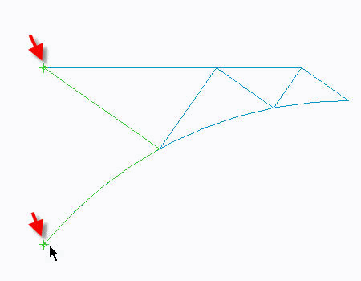5. 在“旋转”(Rotation) 部分，单击“固定的旋转”(Fixed Rotation) 用于 X 和 Y 的旋转。
6. 单击“确定”(OK)。
-
任务 5. 定义并运行静态分析。
1. 在功能区中，选择“主页”(Home) 选项卡。
2. 在“运行”(Run) 组中单击“分析和研究”(Analyses and Studies)
 。将出现“分析和设计研究”(Analyses and Design Studies) 对话框。
。将出现“分析和设计研究”(Analyses and Design Studies) 对话框。
3. 单击“文件”(File) > “新建静态分析”(New Static)。将出现“静态分析定义”(Static Analysis Definition) 对话框。
4. 完成以下步骤：
- 在“名称”(Name) 字段中键入 Framework。
- 选择在“约束集/元件”(Constraint Set/Component) 和“载荷集/元件”(Load Set/Component) 部分中显示的约束集和载荷集。
- 选择“收敛”(Convergence) 选项卡，然后从“方法”(Method) 下拉菜单中单击“多通道自适应”(Multi-Pass Adaptive)。
- 在“多项式阶”(Polynomial Order) 部分的“最小”(Minimum) 字段中键入 1，在“最大”(Maximum) 字段中键入 9 。
- 在“限制”(Limits) 部分，在“收敛百分比”(Percent Convergence) 部分键入 10。
- 在“收敛于”(Converge on) 部分，选择“测量”(Measures)。
- 选择 “列出测量”(List Measures)
 。将出现“测量”(Measures) 对话框。
。将出现“测量”(Measures) 对话框。
- 按住 CTRL 键并选择下列测量：
- max_beam_bending
- max_beam_tensile
- max_beam_torsion
- max_beam_total
- max_disp_mag
- max_disp_x
- max_disp_y
- max_disp_z
- max_rot_mag
- max_rot_x
- max_rot_y
- max_rot_z
- strain_energy
- 在“测量”(Measures) 对话框中，单击“确定”(OK) 返回至“静态分析定义”(Static Analysis Definition) 对话框。
5. 单击“确定”(OK) 返回到“分析和设计研究”(Analyses and Design Studies) 对话框。
6. 单击“配置运行设置”(Configure Run Settings) 。将出现“运行设置”(Run Settings) 对话框。
7. 默认情况下，结果和临时输出目录被设置在工作目录中。两种分析都储存在此位置。单击“确定”(OK)。
8. 在“分析和设计研究”(Analyses and Design Studies) 对话框中选择 Framework，然后单击“开始运行”(Start Run)
 。单击“是”(Yes) 以运行交互诊断。
。单击“是”(Yes) 以运行交互诊断。
9. 分析完成后，单击“显示研究状况”(Display Study Status)
 查看汇总报告。
查看汇总报告。
10. 关闭所有对话框并返回至“分析和设计研究”(Analyses and Design Studies) 对话框。
-
任务 6. 创建结果窗口并检查结果。
1. 在“分析和设计研究”(Analyses and Design Studies) 窗口中选择 Framework。
2. 单击“审阅结果”(Review Results)
 。将出现“结果窗口定义”(Result Window Definition) 对话框。
。将出现“结果窗口定义”(Result Window Definition) 对话框。
3. 完成以下步骤：
- 校验已将“条纹”(Fringe) 选定为“显示”(Display) 类型。
- 选择“数量”(Quantity) 选项卡。
- 校验“应力”(Stress) 已选定。
- 从下拉菜单中选择 MPa。
- 从“分量”(Component) 下拉菜单中选择 von Mises。
- 取消选择“扭转”(Torsional)。
- 选择“显示选项”(Display Options) 选项卡。如图所示完成字段。
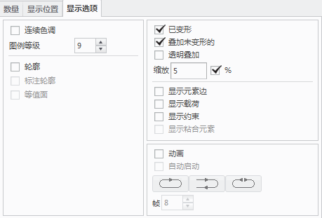4. 单击“确定并显示”(OK and Show)。
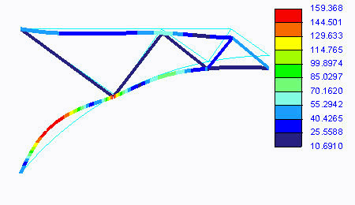5. 通过单击“编辑”(Edit) > “复制”(Copy) 创建另一个结果窗口。“结果窗口定义”(Result Window Definition) 对话框的副本随即出现。
6. 选择“数量”(Quantity) 选项卡。从“在”(At) 下拉菜单中选择“恢复点”(Recovery Point)。
7. 从“截面”(Sections) 下拉列表中选择点 6。
8. 单击“确定并显示”(OK and Show)。
重复这一过程并在具有横截面的梁上选取任意恢复点。同样显示那些结果。
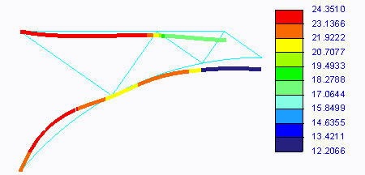9. 通过单击“编辑”(Edit) > “复制”(Copy) 创建合力和力矩图形。“结果窗口定义”(Result Window Definition) 对话框的副本随即出现。
10. 从“显示类型”(Display Type) 下拉菜单中选择“图形”(Graph)。
11. 选择“数量”(Quantity) 选项卡。如图所示完成字段。
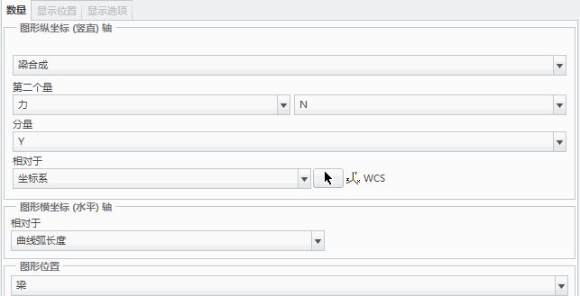12. 在“图形位置”(Graph Location) 部分，单击“选择参考”(Select Reference)
 并选择框架的顶部水平梁。
并选择框架的顶部水平梁。
13. 单击“确定并显示”(OK and Show)。
为沿着 X 轴和 Z 轴的“梁合成”(Beam Resultant) 重复此过程。同样，尝试显示“梁合成”(Beam Resultant)，但是，这次将“力矩”(Moment) 用作第二个量。
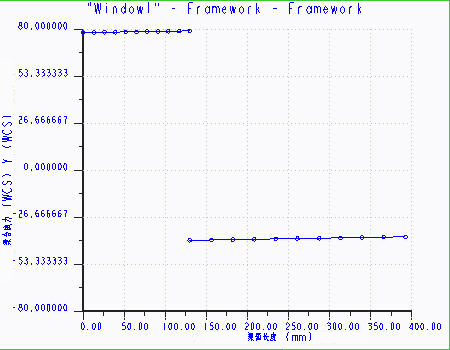14. 单击“文件”(File) > “退出结果”(Exit Results) 返回至 Creo Simulate。在“消息”(Message) 对话框中单击“否”(No)。
15. 在“分析和设计研究”(Analyses and Design Studies) 对话框中，单击“关闭”(Close)。
16. 单击“文件”(File) > “管理会话”(Manage Session) > “拭除当前”(Erase Current) 以关闭显示的窗口，并从内存中拭除模型。当提示您确认时，请单击“是”(Yes)。
练习就此结束。